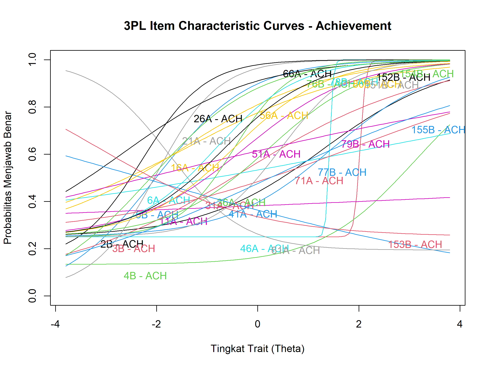

Analisis Item Response Theory (IRT)
Parameter item menggunakan model 2PL dan 3PL
Model 2PL (Two-Parameter Logistic)
Model IRT yang mempertimbangkan diskriminasi dan kesulitan item

Model 3PL (Three-Parameter Logistic)
Model IRT dengan parameter tambahan untuk menangani guessing

Penjelasan Parameter IRT
Discrimination (a)
Seberapa baik item membedakan responden dengan kemampuan berbeda. Nilai lebih tinggi = diskriminasi lebih baik.
Difficulty (b)
Tingkat kesulitan item. Nilai lebih tinggi = item lebih sulit.
Guessing (c)
Probabilitas menjawab benar dengan menebak (hanya pada model 3PL).